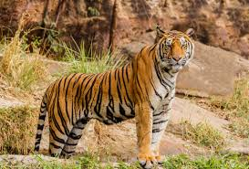

Tigers arw a very majestic and intelligent creature. They are the largest member of the cat family. Today there are only areounf 4,000 tigers that still exsit in the wild. Their population has been damaged due to the number of pochers. Tigers mainly eat other wild animals. They are known for hunting and stalking their prey. It is also been said that old or injured tigers will sometimes attack humans and or domestic animals.
| Tiger Species | Bengal Tiger | Siberian Tiger | Indochinese Tiger |
|---|---|---|---|
| Average Height | 3.5 feet | 3 feet | 3.5 feet |
| Average Weight | ~400 lbs. | ~475 lbs. | ~415 lbs. |
Tigers have become rare to find in the wild. About a thousand years ago there were close to 100,000 tigers in the wild. Since that time that number has decreased dramatically. Today only about 3,000-4,500 are still living in the wild. In fact, four types have become exstinct. The South Chinese Tiger, Caspian Tiger, Javan Tiger, and the Bali Tiger all become extinct. This is a shame becuase these beautiful creatures are intresting to study and watch in the wild. I mean how can you not like tigers.
There are 9 known tiger species in the world, and everyone has their own favorites. In my opinion, the top 3 species are as listed below:
For more information on Tigers, you may visit: This Wikipedia Page on Tigers.